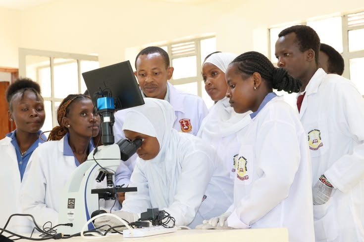
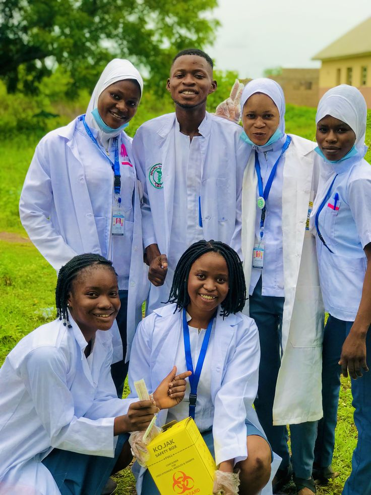
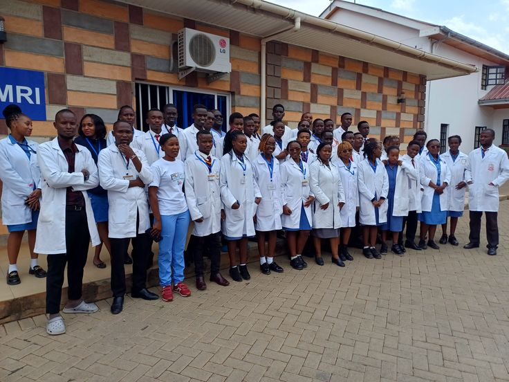
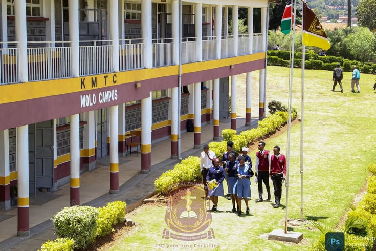
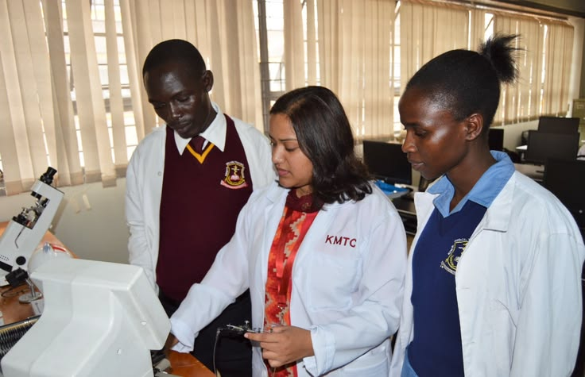
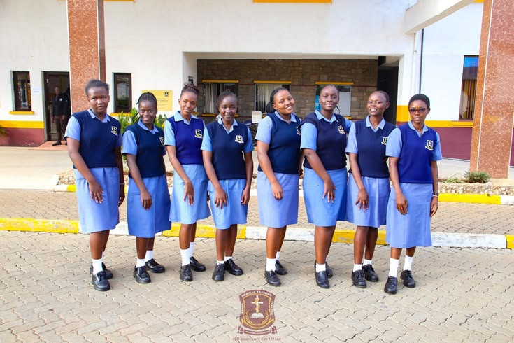

Highest support

LEARN.
HEAL.
SERVE.
HEAL.
SERVE.
TRAIN TO CARE. FUNDED TO FINISH.
Your calling
deserves a fair start.
Kenya needs its next generation of health workers. Funding should never stand in their way. Apply for a bursary designed around students training at Kenya Medical Training College campuses.
Support from KSh 5,000 to KSh 20,000
01 / TRAINING THAT SERVES KENYA01 / 04
05Funding bands
20,000 KShMaximum award
All KMTC campusesOpen to every enrolled KMTC student

Every great healer started as a student.FOR THE CARE KENYA NEEDS
Fees should never
stand between you
and a patient’s bedside.
Behind every student is a story: a family making sacrifices, a dream taking shape, a community waiting for its next nurse, clinical officer or lab technologist.
This bursary puts financial need at the centre of student support. Keep learning. Keep showing up. The future you are working towards matters.
Built around KMTC students
Every campus, every programme, one simple application. Funding amounts and the processing account are confirmed by KMTC before launch.
FUNDING THAT FOLLOWS YOUR TRAINING
One calling.
Five funding bands.
Amounts are assigned from your funding band and confirmed by KMTC.
Enhanced support
Mid-level support
Additional support
Entry support
Your amount is assigned automatically
Apply bursary ↗The system matches the funding band entered in your application to the proposed bursary amount. You cannot choose an amount.
THREE SIMPLE PAGES. ONE CLEAR PATH.
From classroom to clinic, step by step.
Check your fit
Open to students enrolled at any KMTC campus.
Tell your story
Select your KMTC campus, study year, band and circumstances.
Review carefully
Check your information and see the amount you will receive before you submit.
Confirm and pay
Pay the small processing fee and receive your success notice.

FOR THE FUTURE HEALTH WORKERS OF KENYA
“A trained health worker
changes a family’s story.
Many of them, a nation’s.”
Finish your training. Serve your community.
Apply bursary ↗
CARE STARTS WITH TRAINING
Study hard.
Heal well.
Every practical session brings you closer to the health worker your community needs.

HANDS-ON, HEART-FIRST
Practise the skills.
Protect the people.
Steady hands and kind hearts are built in training.

GRADUATION DAY
A certificate is a milestone.
Your service is the journey.
Take what you learn into every ward, clinic and village.
ANSWERS BEFORE YOU BEGIN
A little clarity
goes a long way.
Who can apply?
Any student enrolled at a Kenya Medical Training College campus.
How is my amount decided?
It is assigned automatically from the funding band you enter. You cannot choose an amount.
How do I know my application went through?
After you pay the processing fee and it is verified, you get a success notice in the app.
Is there any fee?
A small government processing fee applies when you submit your application. You will see the exact amount on the last step, just before you submit.